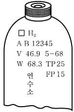

가스산업기사 (2007-09-02 기출문제)
1과목: 연소공학
1. 다음 중 폭발등급 2급인 가스는?
- 수소
- 프로판
- 에틸렌
- 아세틸렌
(정답률: 47%)

2. 전 폐쇄 구조인 용기 내부에서 폭발성 가스의 폭발이 일어났을 때 용기가 압력에 견디고 외부의 폭발성 가스에 인화할 우려가 없도록 한 방폭구조는?
- 내압방폭구조
- 안전증방폭구조
- 특수방폭구조
- 유입방폭구조
(정답률: 91%)
3. LPG 에 대한 설명 중 틀린 것은?
- 포화탄화수소화합물이다.
- 휘발유 등 유기용매에 용해된다.
- 상온에서는 기체이나 가압하면 액화된다.
- 액체비중은 물보다 무겁고, 기체상태에서는 공기보다 가볍다.
(정답률: 82%)
4. 다음 연소에 대한 설명 중 옳은 것은?
- 착화온도와 연소온도는 항상 같다.
- 이론연소온도는 실제연소온도보다 높다.
- 일반적으로 연소온도는 인화점보다 상당히 낮다.
- 연소온도가 그 인화점 보다 낮게 되어도 연소는 계속된다.
(정답률: 79%)
5. 1kg의 공기를 20℃, 1kg/cm2인 상태에서 일정 압력으로 가열팽창시켜서 부피를 처음의 5배로 하려고 한다. 이 때 필요한 온도 상승은 약 몇 ℃인가?
- 1172
- 1292
- 1456
- 1561
(정답률: 62%)
6. 가스연료의 연소에 있어서 확산염을 사용할 경우 예혼합염을 사용하는 것에 비해 얻을 수 있는 장점이 아닌 것은?
- 역화의 위험이 없다.
- 가스량의 조절범위가 크다.
- 가스의 고온 예열이 가능하다.
- 개방대기 중에서도 완전연소가 가능하다.
(정답률: 61%)
7. 0℃, 1기압에서 C3H8 5kg 의 체적은 약 몇 m3인가? (단, 이상기체로 가정하고, C의 원자량은 12, H의 원자량은 1이다)
- 0.63
- 1.54
- 2.55
- 3.67
(정답률: 67%)
8. 다음 중 연료비가 가장 높은 것은?
- 반역청탄
- 갈탄
- 저도역청탄
- 무연탄
(정답률: 77%)
9. 다음 중 기상 폭발 발생을 예방하기 위한 대책으로 옳지 않은 것은?
- 환기에 의해 가연성 기체의 농도상승을 억제한다.
- 집진장치 등으로 분진 및 분무의 퇴적을 방지한다.
- 휘발성 액체를 불활성 기체와 접촉을 피하기 위해 공기로 차단한다.
- 반응에 의해 가연성 기체의 발생 가능성을 검토하고, 반응을 억제하거나 또는 발생한 기체를 밀봉한다.
(정답률: 84%)
10. 다음 연료 중 착화온도가 가장 낮은 것은?
- 벙커C유
- 무연탄
- 역청탄
- 목재
(정답률: 79%)
11. 가연성 증기를 발생하는 액체 또는 고체가 공기와 혼합하여 기상부에 다른 불꽃이 닿았을 때 연소가 일어나는데 필요한 최저의 액체 또는 고체의 온도를 의미하는 것은?
- 이슬점
- 인화점
- 발화점
- 착화점
(정답률: 77%)
12. 10L의 C3H8 가스를 완전연소시키는데 필요한 산소의 부피 및 연소 후 발생하는 이산화탄소의 부피는 각각 얼마인가?
- O2 : 30L, CO2 : 30L
- O2 : 50L, CO2 : 30L
- O2 : 40L, CO2 : 25L
- O2 : 20L, CO2 : 40L
(정답률: 76%)
13. 다음 연소범의에 대한 설명 중 틀린 것은?
- 수소 가스의 연소범위는 약 4~75%이다.
- 가스의 온도가 높아지면 연소범위는 좁아진다.
- C2H2 는 자체분해폭발이 가능하므로 연소상한계를 100%로도 볼 수 있다.
- 연소범위는 가연성기체의 공기와의 혼합비율에 있어 점화원에 의해 필연적으로 연소가 일어날 수 있는 범위를 말한다.
(정답률: 77%)
14. 화학 반응소도를 지배하는 요인에 대한 설명으로 가장 옭은 것은?
- 압력이 증가하면 반응속도는 항상 증가한다.
- 생성물질의 농도가 커지면 반응속도는 항상 증가한다.
- 자신은 변하지 않고 다른 물질의 화학변화를 촉진하는 물질을 부촉매라고 한다.
- 온도가 높을수록 반응속도가 증가한다.
(정답률: 82%)
15. 소형가열로, 열처리로 등 비교적 소규모의 가열장치에 사용되며 공기압을 높일수록 무화 공기량이 저감되는 버너는?
- 고압기류식 버너
- 저압기류식 버너
- 유압식 버너
- 선회식 버너
(정답률: 78%)
16. 가연성 물질의 성질에 대한 설명으로 옳은 것은?
- 끓는점이 낮으면 인화의 위험성이 낮아진다.
- 가연성액체는 온도가 상승하면 점성이 적어지고 화재를 확대시킨다.
- 전기전도도가 낮은 인화성 액체는 유동이나 여과 시 정전기를 발생시키지 않는다.
- 일반적으로 가연성액체는 물보다 비중이 작으므로 연소 시 축소된다.
(정답률: 71%)
17. 연소의 3요소에 해당하지 않는 것은?
- 가연성 물질
- 산소공급원
- 점화원
- 과압력원
(정답률: 94%)
18. 저발열량이 46MJ/kg인 연료 1kg 을 완전 연소시켰을 때 연소가스의 평균 정압비열이 1.3kJ/kg·K이고 연소가스량은 22kg이 되었다. 연소전의 온도가 25℃이었을 때 단열 화염온도는 약 몇 ℃인가?
- 1341
- 1608
- 1633
- 1728
(정답률: 48%)
19. 상온, 표준대기압 하에서 어떤 혼합기체의 각 성분에 대한 부피백분율이 각각 CO2 20%, N2 20%, O2 40%, Ar 20%이면 이 혼합기체 중 CO2 분압은 약 몇 mmHg인가?
- 152
- 252
- 352
- 452
(정답률: 52%)
20. 연소에 있어서 연소의 고발열량과 진발열량과의 의미의 차이는 무엇인가?
- 연소물질이 무엇인가에 따라 고발열량과 진발열량으로 구분된다.
- 연소로 생긴 물을 실제 기체로 생각하는 것이다.
- 연소로 인해 생긴 수증기의 증발 잠열을 포함하는가 또는 아닌가에 의한 차이다.
- 연소열과는 무관한 것이다.
(정답률: 63%)
2과목: 가스설비
21. 포스겐가스를 제조하는 방법으로 옳은 것은?
- 물과 염화수소를 저온으로 반응시켜 제조한다.
- 일산화탄소를 활성탄 촉매 하에 염소와 반응시킨다.
- 일산화탄소와 염화주석을 고온으로 반응시켜 제조한 다.
- 염화수소와 산소를 고온으로 반응시켜 제조한다.
(정답률: 70%)
22. 직경 100mm, 행정150mm, 회전수600rpm, 체적효율이 0.8인 2기통 왕복압축기의 송출량은 약 몇m3/min인가?
- 0.57
- 0.84
- 1.13
- 1.54
(정답률: 67%)
23. 정압기의 기본구조 중 2차 압력을 감지하여 그 2차 압력의 변동을 메인밸브로 전하는 부분은?
- 다이어프램
- 조정밸브
- 슬리브
- 웨이트
(정답률: 83%)
24. 정압기의 부속설비에 대한 설치 및 유지관리에 대한 사항으로 옳은 것은?
- 정압기 입구배관에 가스압력이 비정상적으로 상승한 경우 통부할 수 있는 경보장치를 설치한다.
- 단독사용자에게 가스를 공급하는 정압기에서 가스가 누출 시 공급자가 상주하는 곳에 통보하는 설비를 한다.
- 정압기에 바이패스관을 설치하는 경우에는 밸브를 설치하고 그 밸브에 봉인조치를 한다.
- 단독사용자에게 가스를 공급하는 정압기는 정압기실 출입문 개폐여부 및 긴급차단밸브 개폐여부를 통보하는 경보설비를 설치하지 아니한다.
(정답률: 35%)
25. 관내부의 마찰계수를 0.002, 길이 100m, 관의 내경 40mm, 유속 1m/s, 중력가속도 9.8m/s2 일 때 마찰에 의한 수두손실은 약 몇 m인가?(오류 신고가 접수된 문제입니다. 반드시 정답과 해설을 확인하시기 바랍니다.)
- 0.0102
- 0.102
- 1.02
- 10.2
(정답률: 48%)
26. 저장탱크에 설치하는 안전밸브는 지면에서 몇m 이상의 높이에 가스방출관을 설치하여야 하는가?
- 2
- 5
- 7
- 10
(정답률: 83%)
27. LPG 공급소비시설의 설계 시 유의사항으로 가장 거리가 먼 것은?
- 사용목적에 합당한 기능을 가지고 사용상 안전할 것
- 취급이 용이하고, 사용에 편리할 것.
- 모양에 관계없이 관련시설과의 조화가 되어 있을 것
- 구조가 간단하고, 시공이 용이할 것
(정답률: 84%)
28. 용기 내압시험 시 뷰렛은 300㎖의 용적을 가지고 있으며 전 증가는 200㎖, 항구증가는 15㎖ 일 때 이 용기의 항구 증가율은?
- 5%
- 6%
- 7.5%
- 8.5%
(정답률: 77%)
29. 특수강에 내마멸성, 내식성을 부여하기 위하여 주로 첨가하는 원소는?
- 니켈
- 크롬
- 몰리브덴
- 망간
(정답률: 83%)
30. 충전용기의 정의로 옳게 표현된 것은?
- 1/2이상 충전되어 있는 상태의 용기
- 2/3이상 충전되어 있는 상태의 용기
- 3/5이상 충전되어 있는 상태의 용기
- 4/5이상 충전되어 있는 상태의 용기
(정답률: 70%)
31. 가스계량기의 건물 외부에 설치할 때 바닥으로부터 높이는 얼마가 가장 적당한가? (단.30m3/hr 미만에 한한다.)
- 1.6m 이상 2m 이내
- 1.6m 이하
- 2.0m 이상
- 2.0m 이하
(정답률: 86%)
32. 천연가스의 연소열을 이용하여 LNG를 기화시키는 기화장치는?
- ORV
- SMV
- 중간열매체식
- 전기가열식
(정답률: 51%)
33. 증기압축 냉동기에서 냉매의 엔탈피가 일정한 기구는?
- 응축기
- 증발기
- 압축기
- 팽창밸브
(정답률: 70%)
34. 이음매 없는 용기 제조 시 재료시험 항목이 아닌 것은?
- 인장시험
- 충격시험
- 압궤시험
- 기밀시험
(정답률: 56%)
35. 고압가스 용기의 충전구에 관한 내용 중 옳은 것은?
- 가연성 가스의 경우 대개 오른 나사이다.
- 충전가스가 암모니아인 경우 왼나사이다.
- 가스 충전구는 반드시 나사형이어야 한다.
- 가연성 가스의 경우 대개 왼 나사이다.
(정답률: 85%)
36. 고압장치 배관에 발생된 열응력을 제거하기 위한 이음이 아닌 것은?
- 루프형
- 슬라이드형
- 벨로우즈형
- 플랜지형
(정답률: 80%)
37. 시안화수소를 충전한 용기의 충전 후 정치시간과 누출검사에 대하여 옳게 설명한 것은?
- 24시간 정치하고 1일 1회 이상 질산구리벤젠 등의 시험지로 가스누출검사를 실시한다.
- 24시간 정치하고 1일 2회 이상 염화제1동 등의 시험지로 가스누출검사를 실시한다.
- 48시간 정치하고 1일 1회 이상 질산구리벤젠 등의 시험지로 가스누출검사를 실시한다.
- 48시간 정치하고 1일 2회 이상 염화제1동 등의 시험지로 가스누출검사를 실시한다.
(정답률: 85%)
38. 펌프를 운전하였을 때 주기적으로 한숨을 쉬는 듯한 상태가 되어 입, 출구 압력계의 지침이 흔들리고 동시에 송출유량이 변화하는 현상과 이에 대한 대책을 옳게 설명한 것은?
- 서어징현상 : 회전차 안내 깃의 모양 등을 바꾼다.
- 캐비테이션 : 펌프설치 위치를 낮추어 흡입양정을 짧게 한다.
- 수격작용 : 플라이휠을 설치하여 펌프의 속도가 급격히 변하는 것을 막는다.
- 베이퍼록 현상 : 흡입관의 지름을 크게 하고 펌프의 설치위치를 최대한 낮춘다.
(정답률: 71%)
39. 도시가스 정압기에 설치되어있는 원격감시장치가 아닌 것은?
- 가스차단장치
- 경보장치
- 가스누출검지통보설비
- 출입문 개폐통보장치
(정답률: 34%)
40. 그림은 수소용기의 각인이다 ①V ②Tp ③Fp의 의미에 대하여 바르게 나타낸 것은?

- ①내용적②최고충전압력 ③내압시험압력
- ①총부피②내압시험압력 ③기밀시험압력
- ①내용적②내압시험압력 ③최고충전압력
- ①내용적②사용압력 ③기밀시험압력
(정답률: 91%)
3과목: 가스안전관리
41. 다음 가스 중 불연성 가스가 아닌 것은?
- 아르곤
- 탄산가스
- 질소
- 일산화탄소
(정답률: 81%)
42. 차량에 고정된 저장탱크를 이용하여 고압가스를 이송하려 할 때 저장탱크는 그의 후면과 차량의 뒷범퍼와의 사이의 수평거리가 몇 ㎝ 이상이 되도록 고정시켜야 하는가? (단, 후부 취출식 탱크 이외의 탱크이다.)
- 20
- 30
- 40
- 50
(정답률: 60%)
43. 고압가스일반제조의 시설기준에 대한 설명 중 옳은 것은?
- 초저온저장탱크에는 환형유리관 액면계를 설치할 수 있다.
- 고압가스설비에 장치하는 압력계는 상용압력의 1.1배 이상 2배 이하의 최고눈금이 있어야 한다.
- 독성가스 및 공기보다 무거운 가연성 가스의 제조 시 설에는 역류방지밸브를 설치하여야 한다.
- 저장능력이 1000톤 이상인 가연성가스(액화가스)의 지상 저장탱크의 주위에는 방류둑을 설치하여야 한다.
(정답률: 67%)
44. 위험평가는 크게 정성적 위험평가와 정량적 위험평가로 구분할 수 있다. 정량적 위험평가의 대표적인 기법으로, 하나의 특정한 사고에 집중한 연역적 기법으로 사건의 원인을 결정하는 위험평가 기법은?
- HAZOP
- FTA
- ETA
- FMEA
(정답률: 47%)
45. 고압가스 충전용기의 운반에 대한 설명 중 틀린 것은?
- 밸브가 돌출된 충전용기는 고정식 프로텍터를 부착시켜야 한다.
- 충전용기를 로프로 견고하게 결속해야 한다.
- 중전용기는 항상 40℃ 이하로 유지해야 한다.
- 운반 시 보기 쉬운 곳에 황색글씨로 위험표시를 하여야 한다.
(정답률: 74%)
46. 아세틸렌을 용기에 충전하는 때에는 미리 용기에 다공물질을 고루 채워 다공도가 75%이상 92%미만이 되도록 한 후 어떤 물질로 고루 침윤시키고 충전해야 하는가?
- 질소
- 에틸렌
- 아세톤
- 암모니아
(정답률: 64%)
47. 냉동기를 제조하고자 하는 자가 갖추어야 할 제조설비가 아닌 것은?
- 프레스 설비
- 조립설비
- 용접설비
- 도막측정기
(정답률: 86%)
48. 고압가스 충전용기의 운반기중 중 틀린 것은?
- 차량 등에는 고무판 또는 가마니 등을 항상 갖춰 충전용기를 차에 싣거나 내릴 때에는 충격을 최소한으로 방치할 것.
- 충전용기는 항상 자전거 또는 오토바이에 적재하여 운반 할 것.
- 가연성가스 또는 산소를 운반하는 차량에는 소화설비 및 재해발생 방지를 위한 응급조치 자재 및 공구 등을 휴대할 것.
- 독성가스를 차량에 적재하여 운반할 때에는 보호구 및 재해발생 방지를 위한 응급조치 자재 및 공구 등을 휴대할 것.
(정답률: 93%)
49. 고압가스 특정제조시설 중 배관의 누출확산 방지를 휘한 시설 및 기술기준으로 옳지 않은 것은?
- 시가지, 하천, 터널 및 수로 중에 배관을 설치하는 경우에는 누출가스의 확산방지조치를 한다.
- 사질토 등의 특수성 지방(해저 제외) 중에 배관을 설치하는 경우에는 누출가스의 확산방지조치를 한다.
- 고압가스의 온도와 압력에 따라 배관의 유지관리에 필요한 거리를 확보한다.
- 고압가스의 종류에 따라 누출된 가스의 확산방지조치를 한다.
(정답률: 56%)
50. 공기액화분리장치의 액화산소 5L 중에 메탄이 360㎎, 에틸렌이 196㎎이 섞여 있다면, 탄화수소 중 탄소의 질량(㎎)은 얼마인가?
- 438
- 458
- 469
- 500
(정답률: 39%)
51. 독성가스 사용시설중 배관, 플랜지 및 밸브 접합에 대한 내용으로 가장 적당한 것은?
- 접합은 반드시 가용접에 의하여 한다.
- 용접을 원칙으로 하되 안전상 필요한 강도를 가진 플랜지 접합으로 할 수 있다.
- 반드시 필요한 인장도를 가진 플랜지를 사용한다.
- 내산성 재료에 필요한 강도를 가지는 플랜지를 원칙으로 사용한다.
(정답률: 60%)
52. 액화 가스를 충전한 차량에 고정된 탱크는 그 내부에 액면 요동을 방지하기 위하여 무엇을 설치하는가?
- 슬리튜브
- 방파판
- 긴급차단장치
- 역류방지밸브
(정답률: 91%)
53. 액화석유가스 공급시설에 사용되는 기화기 설치의 장점에 대하여 설명 중 가장 거리가 먼 것은?
- 가스조성이 일정하다.
- 공급압력이 일정하다.
- 연속공급이 가능하다.
- 한랭 시에도 공급이 가능하다.
(정답률: 51%)
54. 가연성가스의 제조설비 또는 전기설비는 방폭성능을 가지는 구조이어야 한다. 방폭성능 구조에서 제외되는 가스는?
- 브롬화메탄
- 프로판
- 수소
- 메탄
(정답률: 55%)
55. 고압가스 충전용기의 운반기준 중 동일 차량에 적재 운반할 수 없는 것은?
- 염소와 아세틸렌
- 질소와 수소
- 에틸렌과 수소
- 메탄과 수소
(정답률: 91%)
56. 구내에서 발생한 대형 도시가스 사고 중 대구 도시가스 폭발사고의 주원인은 무엇인가?
- 내관 부식
- 내관의 응력부족
- 부적절한 매설
- 타 공사지 도시가스 배관 손상
(정답률: 87%)
57. 내용적이 50L 인 용기에 프로판가스를 충전하는 때에는 얼마의 충전량(kg)을 초과할 수 없는가? (단, 충전상수 프로판의 경우 2.35이다)
- 20
- 20.4
- 21.3
- 24.4
(정답률: 88%)
58. 최고 충전압력이 12MPa 인 압축가스 용기의 내압시험 압력은 몇 MPa인가?
- 16
- 18
- 20
- 25
(정답률: 63%)
59. 저장탱크에 액화석유가스를 충전하는 때에는 가스의 용량이 상용의 온도에서 그 저장탱크 내용적의 몇%를 넘지 아니하여야 하는가?
- 75
- 80
- 85
- 90
(정답률: 83%)
60. 아세틸렌가스 또는 압력이 9.8MPa 이상인 압축가스를 용기에 충전하는 시설에서 방호벽을 설치하지 않아도 되는 경우는?
- 압축기와 그 충전장소 사이
- 압축기와 그 가스충전용기 보관 장소 사이
- 충전장소와 긴급차단장치 조작 장소 사이
- 충전장소와 그 충전용주관밸브 조작밸브 사이
(정답률: 55%)
4과목: 가스계측
61. 압력계 교정 또는 검정용 표준기로 사용되는 압력계는?
- 표준 브르돈관식
- 기준 박막식
- 표준 드럼식
- 기준 분동식
(정답률: 79%)
62. 회전자형 및 피스톤형 가스미터를 제외한 건식가스미터의 경우 검정증인의 올바른 표시위치는?
- 외부함
- 부피조정장치
- 눈금 지시부 및 상판의 접합부
- 분관의 보기 쉬운 부분 및 부관의 출입구
(정답률: 73%)
63. 가스미터의 원격계측(검침) 시스템에서 원격계측 방법의 종류가 아닌 것은?
- 제트식
- 기계식
- 펄스식
- 전자식
(정답률: 77%)
64. 기준 가스미터의 지시량이 380m3/h이고 시험대상의 가스미터 유량이 400m3/h 이라면 이 가스미터의 오차율은 얼마인가?
- 4.0%
- 4.2%
- 5.0%
- 5.2%
(정답률: 58%)
65. 가스누출경보차단장치에 대한 설명 중 틀린 것은?
- 원격개폐가 가능하고 누출된 가스를 검지하여 경보를 울리면서 자동으로 가스통로를 차단하는 구조이어야 한다.
- 제어부에서 차단부의 개폐상태를 확인할 수 있는 구조 이어야 한다.
- 차단부가 검지부의 가스검지 등에 의하여 닫힌 후에는 복원조작을 하지 않는 한 열리지 않는 구조이어야 한다.
- 차단부가 전자밸브인 경우에는 통전 시 닫히고, 정전 시 열리는 구조이어야 한다.
(정답률: 85%)
66. 다음 중 편위법에 의한 계측기기가 아닌 것은?
- 스프링 저울
- 브르돈관 압력계
- 전류계
- 화학천징
(정답률: 67%)
67. 다음 중 열전대와 비교한 배금저항온도계의 장점에 대한 설명 중 틀린 것은?
- 큰 출력을 얻을 수 있다.
- 기준접점의 온도보상이 필요 없다.
- 측정온도의 상항이 열전대보다 높다.
- 경시변화가 적으며 안정적이다.
(정답률: 61%)
68. 소형이며 대용량의 가스 측정에 적합하며 특히 중압가스의 계량도 가능한 가스미터는?
- 막식
- 루트
- 습식
- 오리피스
(정답률: 83%)
69. 물의 유속과 정압이 각각 3m/s, 0.3kgf/cm2일 때 동압은 약 몇 ㎜H2O인가?
- 459
- 469
- 479
- 489
(정답률: 22%)
70. 가연성 가스검출기의 종류로서 옳지 않은 것은?
- 리트머스형
- 안전등형
- 간섭계형
- 열선형
(정답률: 63%)
71. 공업용 액면계가 갖추어야 할 조건으로 옳지 않은 것은?
- 연속측정이 가능하고, 고온, 고압에 견디어야 한다.
- 지시, 기록 또는 원격 측정이 가능해야 한다.
- 자동제어장치에 적용가능하고, 보수가 용이해야 한다.
- 액위 변화속도가 적고, 액면의 상, 하한계의 적용이 어려워야 한다.
(정답률: 91%)
72. 서보기구에 해당되는 제어로서 목표치가 임의의 변화를 하는 제어로 옳은 것은?
- 정치제어
- 캐스케이드제어
- 추치제어
- 프로세스제어
(정답률: 52%)
73. 가스미터 출구측 배관을 수직배관으로 설치하지 않는 가장 큰 이유는?
- 검침 및 수리 등의 작업이 편리하도록 하기 위하여
- 화기 및 습기 등을 피하기 위하여
- 수분응축으로 밸브의 동결을 방지하기 위하여
- 설치면적을 줄이기 위하여
(정답률: 86%)
74. 대칭 이원자 분자 및 Ar 등의 단원자 분자를 제외한 거의 대부분의 가스를 분석할 수 있으며 선택성이 우수하고 연속분석이 가능한 가스분석 방법은?
- 적외선법
- 반응열법
- 용액전도율법
- 열전도율법
(정답률: 76%)
75. 50L의 물이 들어 있는 욕조에 온수기를 사용하여 온수를 넣은 결과 17분후에 욕조의 온도가 42℃, 온수량이 150L가 되었다. 이 때 온수기로부터 물에 가한 열량은 약 몇 kcal인가? (단, 가스 발열량 5000kcal/m3, 온수기의 가스 소비량 5m3/h, 물의 비열 1kcal/kg℃, 수도 및 욕조의 최초 온도는 5℃로 한다)
- 3700
- 5000
- 5550
- 7083
(정답률: 56%)
76. 다음 가스분석법 중 물리적 가스 분석법에 해당하지 않는 것은?
- 열전도율법
- 적외선흡수법
- 오르자트법
- 가스크로마토그래피법
(정답률: 42%)
77. 불꽃 연소되면서 생성되는 양이온과 전자에 의한 전위계에 전기적인 신호가 이온생성 가능한 물질에만 감응하는 선택성을 가진 가스크로마토그래피(GC) 검출기는?
- TCD
- FID
- ECD
- FPD
(정답률: 67%)
78. 루트미터에 대한 설명 중 틀린 것은?
- 유량이 일정하거나 변화가 심한 곳, 깨끗하거나 건조하거나 관계없이 모든 가스 타입을 계량하기에 적합하다
- 액체 및 아세틸렌, 바이오가스, 침전가스를 계량하는 데에는 다소 부적합하다.
- 공업용에 사용되고 있는 이 가스미터는 칼만식과 스월식의 두 종류가 있다.
- 측정의 정확도와 예상수명은 가스 흐름 내에 먼지의 과다 퇴적이나 다른 종류의 이물질 출현도에 따라 다르다
(정답률: 80%)
79. 전기저항식 습도계의 특징에 대한 설명 중 틀린 것은?
- 저온도의 측정이 가능하고, 응답이 빠르다.
- 고습도에 장기간 방치하면 감습막이 유동한다.
- 연속기록, 원격측정, 자동제어에 주로 이용된다.
- 온도계수가 비교적 작다.
(정답률: 74%)
80. 잔류편차(off-set)는 제거되지만 제어시간은 단축되지 않고, 급변할 때 큰 진동이 발생하는 제어기는?
- P 제어기
- PD 제어기
- PI 제어기
- on-off 제어기
(정답률: 50%)